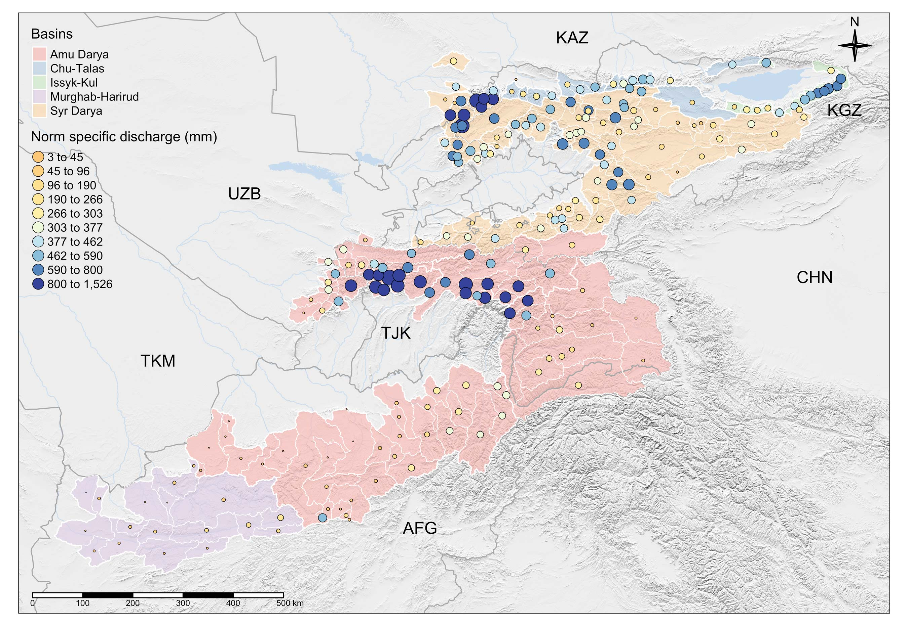

3 Sources of Relevant Data
This Chapter provides a broad overview of relevant available data sources. All these data can be accessed via download from the web free of charge except where otherwise mentioned.
The Chapters Chapter 4, Chapter 5, Chapter 6, and Chapter 7 describe in detail how these data can be prepared for hydrological modeling with RSMinerve. Before this, the following Section 3.1 provides an in-depth discussion of the derivation of a consistent set of gauge location data.
3.1 Gauge Location & Norm Discharge Data
The Central Asia Hydrometeorological Organizations are the organizations administering discharge data. Unfortunately, the organizations do not have a good understanding of most of the past and current locations where they monitor this discharge. This can be verified by checking the website Hydrometeorological Services in Central Asia where many of the shown gauges are not correctly georeferenced.
This is problematic for many reasons, especially for GIS analysis and hydrological modeling. With a focus on the mountain rivers, we developed a workflow to verify gauge locations communicated by Hydrometeorological Organizations in a consistent and comprehensive manner. With the goal of establishing a comprehensive archive, this workflow was applied to map operational stations and past stations.
First, data from all existing gauges and locations were entered into a data frame with the following attributes:
- CODE: Official gauge code in use
- EASTING and NORTHING: Coordinates in UTM42N
- LON and LAT: Longitude and latitude
- NAME_ENG: Translated English station name
- NAME_RU: Original station name
- RIVER: Name of river
- BASIN: Name of the larger basin
- COUNTRY: The country the gauge is located in
- Q_NORM_M3S: Long-term norm discharge
- OBS_PERIOD: Observation period of long-term norm discharge
- SOURCE: Source of information on norm discharge
Second, data on historic stations were obtained from the Soviet compendia Surface Water Resources, Vol 14 Issues 1 and 3. Third, data from northern Afghan rivers’ stream flow characteristics and the location of gauging stations there were obtained from (Olson and Williams-Sether 2010). Norm discharge was calculated from the available data.
All stations were manually located in a Geographic Information System (GIS) using the relevant Soviet Military Topographic maps (1:200’000) from the corresponding region. The maps were downloaded from https://maps.vlasenko.net and subsequently georeferenced in QGIS with the Raster/Georeferencr tool there (QGIS Development Team 2021). Where possible, high-resolution satellite imagery from Microsoft® Bing™ Maps was used to identify measurement bridges and for final validation of the identified locations.
The upstream catchments for each gauge were then mapped in R using the WhiteboxTools v.2.0.0. Like this, we have compiled a list of 297 gauges with their contributing catchments. Figure 3.1 shows the result. For more information, please see (Marti et al. 2023).

For all basins, mean statistics were computed from the digital elevation model, the land cover data, climatological and glacier data, as well as from 1979 through 2012 for mean average monthly temperature and precipitation, and finally, the monthly snow cover fraction derived from MODIS Terra and Aqua Snow Cover Data Product which is available from 2001 through the end of 2021.
The norm discharge data presented here are used for the long-term water balance modeling presented in Chapter 9 in Part III of the book. For selected stations and river basins, we have time series available that can be used to calibrate time-dependent models. Some of these data and their processing will be presented and discussed in Chapter 4.
3.2 Vector data
For our purpose, we define the area of interest (AOI) as 55 deg. E - 85. deg. E and 30 deg. N - 50 deg. N..
Global political boundaries can be obtained from the Global Administrative Divisions database at gadm.org. Except for Turkmenistan, data on first (Oblast) and second-level (Rayon) administrative divisions is available for all Central Asian states.
Shapefiles of large river basins can be retrieved from the Global Runoff Data Center. Note that for the Central Asian region, the flat downstream areas of these basins are delineating natural hydrological borders. They do not account for man-made inter-basin transfers and thus would need to be corrected where necessary.
The river network can be obtained from the Global Runoff Data Center WMOBB data that was released in 2021. It can be downloaded via this link. With 161 MB, approx., data covering the whole globe can be downloaded in a straightforward manner. The global data can be clipped easily with the bounding box defined above.
Data for the large rivers can be extracted from the layer wmobb_rivnets_Q09_10 (containing line sections representing an upland area above 4’504 km2). The layer called wmobb_rivnets_Q08_09 contains line sections representing an upland area between 1’150 km2 and 4’504 km2 and, finally, the wmobb_rivnets_Q07_08 (containing line sections representing an upland area above between 487 and 1’150 km2) (GRDC, Koblenz, Germany: Federal Institute of Hydrology (BfG). 2020). Smaller rivers can be further added to a QGIS project on a case-per-case basis using the additional data sets in the files obtained from GRDC.
Permanent water bodies and courses can be obtained from the global HydroLakes Database (Messager et al. 2016). It can be downloaded via this link.
Glacier data can be taken from the Randolph Glacier Inventory (RGI) 6.0. The inventory contains a global archive of glacier outlines and can be obtained via this website. Information from 16’617 glaciers is available in the AOI. The corresponding data on glacier thickness and glacier thinning rates is available as complementary data Hugonnet et al. (2021). More information on these data can be found in Chapter 6, whereas glacier models are discussed in a separate Section in the Chapter on Hydrological Modeling.
Data on dams is available from the GOODD data set. Information from 88 dams in the region of interest is mapped (Mulligan, Soesbergen, and Sáenz 2020). The data is available from Global Dams Watch.
3.3 Raster Data
The NASA SRTM digital elevation model 1 Arc-second (30 m) global product is used as a DEM (“NASA Shuttle Radar Topography Mission (SRTM)” 2013). There are many ways to access these data, some more, some less convenient. An easy way to access these data is in QGIS by using the SRTM-Downloader Plugin. For web-based access, it is recommended to utilize the NASA EarthExplorer. Sample instructions on how to download DEM data from the EarthExplorer can, for example, be found by watching the following YouTube tutorial.
Land cover information can be obtained from the Copernicus Global Land Service: Land Cover 100m: collection 3: epoch 2019: Globe data (Buchhorn et al. 2019). The Global Land Cover Viewer allows to access, view and download annual land cover data from 2015 - 2019.
High-resolution climate data can be obtained from the Climatologies at High Resolution for the Earth’s Land Surface Areas (CHELSA) dataset via www.chelsa-climate.org. For the Version 2.1 product, climatologies for the periods 1981 - 2010, 2011 - 2040, 2041 - 2070, and 2071 - 2100 for a large number of variables are available for download as GeoTiff-files. With regard to the daily data, it is recommended to use the Global daily 1km land surface precipitation based on cloud cover-informed downscaling. This precipitation product reflects actual conditions in High-Mountain Asia in a much better way than the precipitation from the CHELSA-W5E5 V1.1 product. For daily temperature, the data from the CHELSA-W5E5 V1.1 product can be downloaded for a given domain of interest via this link.
Warning
Note that the daily high-resolution climate fields for the entire Central Asia domain require a lot of storage space. Their processing for later analysis is computationally intensive.
The FLO1K, global maps of mean, maximum and minimum annual stream flow at 1 km resolution from 1960 through 2015 can be retrieved from this web,site. FLO1K delivers relevant data for water resources analyses at a global scale and yet high spatial resolution (Barbarossa et al. 2018). These data can be helpful for long-term water balance assessments and for studying the hydropower potential in the high mountain regions where flow measurements are sparse.
The CHELSA V21 global daily high-resolution climatology, available from 01-01-1979 until 31-12-2011 was processed over the Central Asia domain to map climate trends, including on temperature, precipitation, and snow fraction. The data is available upon request from this site: https://chelsa-climate.org Karger et al. (2021). The CHELSA V21 product is corrected for snow undercatch in the high elevation ranges and thus can represent better actual high mountain precipitation than other available global climatologies (Beck et al. 2020). The aridity index (AI) fields were taken from the bio-climate CHELSA V21 data set and compared with the CGIAR AI product (Trabucco and Zomer 2019). Data on an additional 70 bio-climatic indicators were downloaded from the CHELSA V21 1980 - 2010 climatology, and statistics were extracted for each gauged catchment, together with the AI.
High-resolution crop disaggregated irrigated areas were mapped over the entire Central Asia domain by hydrosolutions GmbH (see also (Ragettli, Herberz, and Siegfried 2018) for more information). Like this, 30 m crop maps were produced with Google Earth Engine using unsupervised classification for 2016 - 2020. These maps, in conjunction with estimates of irrigation water intake volumes and estimates of actual evapotranspiration help in irrigation scheme performance assessments. In hydrological modeling, these data can be used to introduce sectoral consumption estimates and help develop sound and effective basin planning.
3.4 References
Barbarossa, Valerio, Mark A. J. Huijbregts, Arthur H. W. Beusen, Hylke E. Beck, Henry King, and Aafke M. Schipper. 2018. “FLO1K, Global Maps of Mean, Maximum and Minimum Annual Streamflow at 1 Km Resolution from 1960 Through 2015.” Scientific Data 5 (1): 180052. https://doi.org/10.1038/sdata.2018.52.
Beck, Hylke E., Eric F. Wood, Tim R. McVicar, Mauricio Zambrano-Bigiarini, Camila Alvarez-Garreton, Oscar M. Baez-Villanueva, Justin Sheffield, and Dirk N. Karger. 2020. “Bias Correction of Global High-Resolution Precipitation Climatologies Using Streamflow Observations from 9372 Catchments.” Journal of Climate 33 (4): 1299–1315. https://doi.org/10.1175/JCLI-D-19-0332.1.
Buchhorn, M., B. Smets, L. Bertels, B. De Roo, M. Lesiv, N. E. Tsendbazar, M. Herold, and S. Fritz. 2019. “Copernicus Global Land Service: Land Cover 100m: Collection 3: Epoch 2019: Globe.”
Farinotti, Daniel, Matthias Huss, Johannes J. Fürst, Johannes Landmann, Horst Machguth, Fabien Maussion, and Ankur Pandit. 2019. “A Consensus Estimate for the Ice Thickness Distribution of All Glaciers on Earth.” Nature Geoscience 12 (3): 168–73. https://doi.org/10.1038/s41561-019-0300-3.
GRDC, Koblenz, Germany: Federal Institute of Hydrology (BfG). 2020. “Major River Basins of the World / Global Runoff Data Centre, GRDC. 2nd, Rev. Ext. Ed.” Shape.
Hugonnet, Romain, Robert McNabb, Etienne Berthier, Brian Menounos, Christopher Nuth, Luc Girod, Daniel Farinotti, et al. 2021. “Accelerated Global Glacier Mass Loss in the Early Twenty-First Century.” Nature 592 (7856): 726–31. https://doi.org/10.1038/s41586-021-03436-z.
Karger, Dirk Nikolaus, Olaf Conrad, Jürgen Böhner, Tobias Kawohl, Holger Kreft, Rodrigo Wilber Soria-Auza, Niklaus E. Zimmermann, H. Peter Linder, and Michael Kessler. 2017. “Climatologies at high resolution for the earth’s land surface areas.” Scientific Data 4 (1): 170122. https://doi.org/10.1038/sdata.2017.122.
Karger, Dirk Nikolaus, Dirk R. Schmatz, Gabriel Dettling, and Niklaus E. Zimmermann. 2020. “High-resolution monthly precipitation and temperature time series from 2006 to 2100.” Scientific Data 7 (1): 248. https://doi.org/10.1038/s41597-020-00587-y.
Karger, Dirk Nikolaus, Adam M. Wilson, Colin Mahony, Niklaus E. Zimmermann, and Walter Jetz. 2021. “Global daily 1 km land surface precipitation based on cloud cover-informed downscaling.” Scientific Data 8 (1): 307. https://doi.org/10.1038/s41597-021-01084-6.
Marti, Beatrice, Andrey Yakovlev, Dirk Nikolaus Karger, Silvan Ragettli, Aidar Zhumabaev, Abdul Wakil Wakil, and Tobias Siegfried. 2023. “CA-Discharge: Geo-Located Discharge Time Series for Mountainous Rivers in Central Asia.” Scientific Data 10 (1): 579. https://doi.org/10.1038/s41597-023-02474-8.
Messager, M. L., B. Lehner, Grill G., I. Nedeva, and O. Schmitt. 2016. “Estimating the Volume and Age of Water Stored in Global Lakes Using a Geo-Statistical Approach.” Nature Communications 13603.
Mulligan, Mark, Arnout van Soesbergen, and Leonardo Sáenz. 2020. “GOODD, a Global Dataset of More Than 38,000 Georeferenced Dams.” Scientific Data 7 (1): 31. https://doi.org/10.1038/s41597-020-0362-5.
“NASA Shuttle Radar Topography Mission (SRTM).” 2013. NASA. https://earthdata.nasa.gov/learn/articles/nasa-shuttle-radar-topography-mission-srtm-version-3-0-global-1-arc-second-data-released-over-asia-and-australia.
Olson, S. A., and T. Williams-Sether. 2010. “Streamflow Characteristics at Streamgages in Northern Afghanistan and Selected Locations.” U.S. Geological Survey Data Series 529. USGS.
QGIS Development Team. 2021. QGIS Geographic Information System. QGIS Association.
Ragettli, Silvan, Timo Herberz, and Tobias Siegfried. 2018. “An Unsupervised Classification Algorithm for Multi- Temporal Irrigated Area Mapping in Central Asia.” Remote Sensing 10 (11): 1823. https://doi.org/10.3390/rs10111823.
Siegfried, Tobias, Aziz Ul Haq Mujahid, Beatrice Marti, Peter Molnar, Dirk Nikolaus Karger, and Andrey Yakovlev. 2023. “Unveiling the Future Water Pulse of Central Asia: A Comprehensive 21st Century Hydrological Forecast from Stochastic Water Balance Modeling.” https://doi.org/https://doi.org/10.21203/rs.3.rs-3611140/v1.
Trabucco, Antonio, and Robert Zomer. 2019. “Global Aridity Index and Potential Evapotranspiration (ET0) Climate Database v2,” January. https://doi.org/10.6084/m9.figshare.7504448.v3.